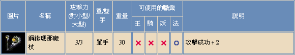

2003年3月5日 鋼鐵瑪那魔杖及古代龍鱗盔甲資料來源：香港天堂官方網站(杖)，香港天堂官方網站(盔甲)  不知這是否放錯資料還是暗示鋼鐵瑪那魔杖已經開放，在香港天堂官方網站中的武器資料中加入了鋼鐵瑪那杖的介紹，重量比普通瑪那魔杖多15，而攻擊成功則多5。 而在防具資料中則加入了古代龍鱗盔甲的介紹，防禦比普通龍鱗盔甲多2，不過只是騎士可用。
香港伺服器3月5日更新內容 來源：香港天堂官方網站 1. 寵物，迷魅或召喚怪物不能進入往遺忘之島的船內。
2. 修正find hack程式於windows 98/ME/XP所發生的程式錯誤。
香港愛神出現惡魔套裝 鳴謝香港愛神玩家Lanceken提供資料！他終於集齊了一套惡魔套裝，經過本網測試後，裝備整套後除了可變身做惡魔外，還有防禦力-2及體力回復量+5的額外效果，18體的角色在裝備後的每下回血量可高達6-11HP呢！而在過重時則不會漸漸回復體力與魔力。這與日本網站Lineage Reporter Club所作的測試吻合。 |